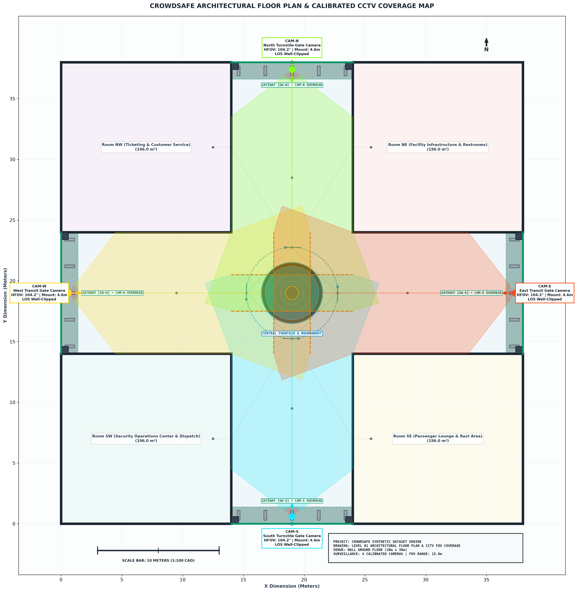

Controlled Transit Interchange • Architectural Blueprint • CCTV Coverage Specification
High-resolution CAD map displaying the 10.0m plus walkway, corner rooms with inward-opening doors, central clock-tower fountain roundabout, speed-gate exit portals, and ray-cast camera viewing cones:

NORTH EXIT (Y = 38m)
+-----------------------------------+
| GATEWAY [GW-N] |
| CAM-N Mount (4.6m, Tilt 34°) |
| [====] [====] [====] [====] |
+-----------------------------------+
| WING_N |
+--------------------+ +--------------------+
| | | |
| ROOM NW | | ROOM NE |
| (Ticketing & | | (Infrastructure & |
| Customer Service) | | Restrooms) |
| 14m x 14m | | 14m x 14m |
| (196.0 m²) | | (196.0 m²) |
| | ROTARY_N | |
| Inward Door [ (.) ] Inward Door |
+--------\-----------+ +-----------/--------+
| GATEWAY [GW-W] | +---------------+ | GATEWAY [GW-E] |
| CAM-W (4.6m) | ROT_W | CLOCK FOUNTAIN| ROT_E | CAM-E (4.6m) |
| [||] [||] [||] | (.) | ROUNDABOUT | (.) | [||] [||] [||] |
| WEST EXIT (X=0m) | | r=2.5m (19.6m²)| | EAST EXIT (X=38m) |
+--------/-----------+ +---------------+ +-----------\--------+
| Inward Door [ (.) ] Inward Door |
| | ROTARY_S | |
| ROOM SW | | ROOM SE |
| (Security Ops & | | (Passenger |
| Dispatch Hub) | | Lounge & Rest) |
| 14m x 14m | | 14m x 14m |
| (196.0 m²) | | (196.0 m²) |
| | WING_S | |
+--------------------+ +--------------------+
| GATEWAY [GW-S] |
| CAM-S Mount (4.6m, Tilt 34°) |
| [====] [====] [====] [====] |
+-----------------------------------+
SOUTH EXIT (Y = 0m)
| Zone / Element | Dimensions / Coordinates | Design Role & Safety Compliance |
|---|---|---|
| Overall Footprint | 38.0m × 38.0m (1,444 m²) | Square envelope perimeter |
| Plus Walkway Corridor | 10.0m Clear Width (640.4 m² net) | Central thoroughfare connecting 4 gateways |
| 4 Corner Rooms | 14.0m × 14.0m each (196.0 m²) | Room NW (Ticketing), NE (Restrooms), SW (Security Ops), SE (Lounge) |
| Corner Room Doors | 1.2m Commercial Magnetic | 100% Inward swinging into room chambers (0% corridor obstruction) |
| Central Roundabout | ∅ 5.0m Fountain (r = 2.5m) | 2.5m counter-clockwise clear pedestrian rotary circulation lane |
| 4 Exit Gateways | 4 Lanes per portal (2.0m width) | Speed gates with drop-arm emergency breakout (520 pers/min/gate) |
| Camera ID | Mount Location | Coordinates (X, Y, Z) | Heading / Tilt | Range | FOV Walkable Coverage |
|---|---|---|---|---|---|
CAM-S |
Over Gateway GW-S | (19.0m, 0.5m, 4.6m) | 90.0° (N) / 34.0° down | 20.5m | 45.2% concourse |
CAM-N |
Over Gateway GW-N | (19.0m, 37.5m, 4.6m) | 270.0° (S) / 34.0° down | 20.5m | 45.2% concourse |
CAM-W |
Over Gateway GW-W | (0.5m, 19.0m, 4.6m) | 0.0° (E) / 34.0° down | 20.5m | 45.2% concourse |
CAM-E |
Over Gateway GW-E | (37.5m, 19.0m, 4.6m) | 180.0° (W) / 34.0° down | 20.5m | 45.2% concourse |
Direct absolute paths to open, edit, or copy into your application: